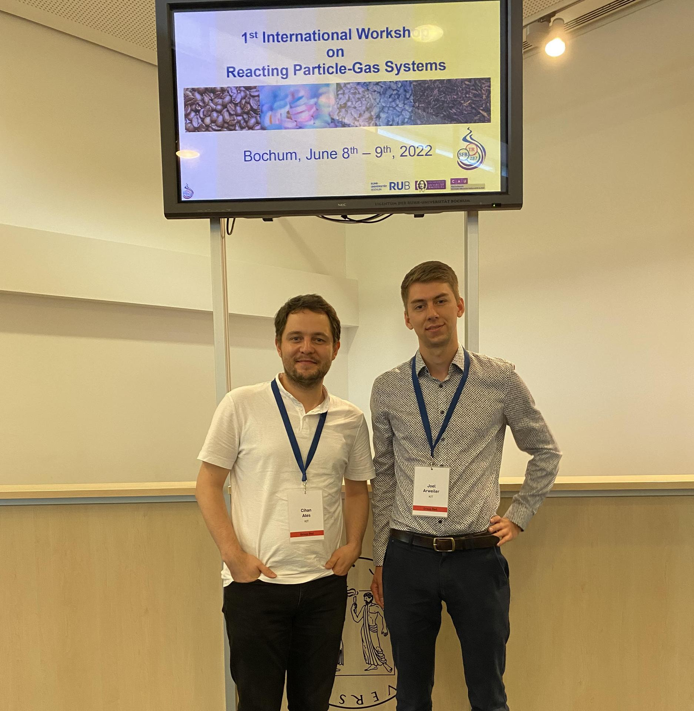
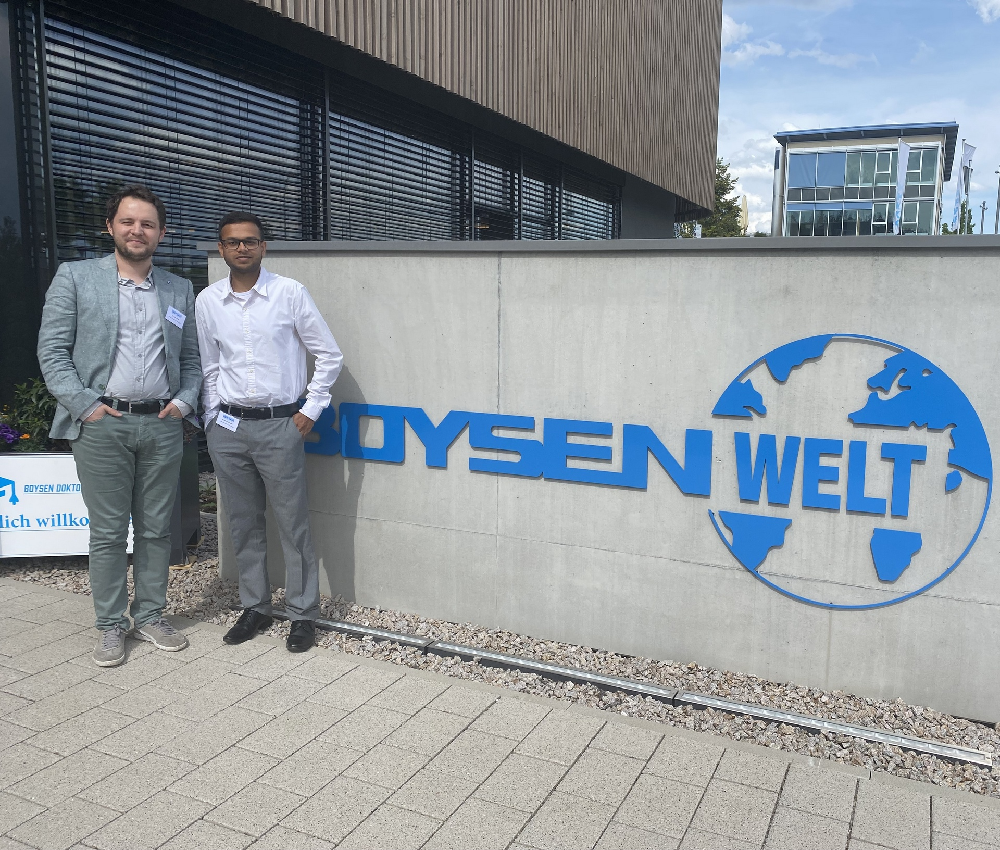
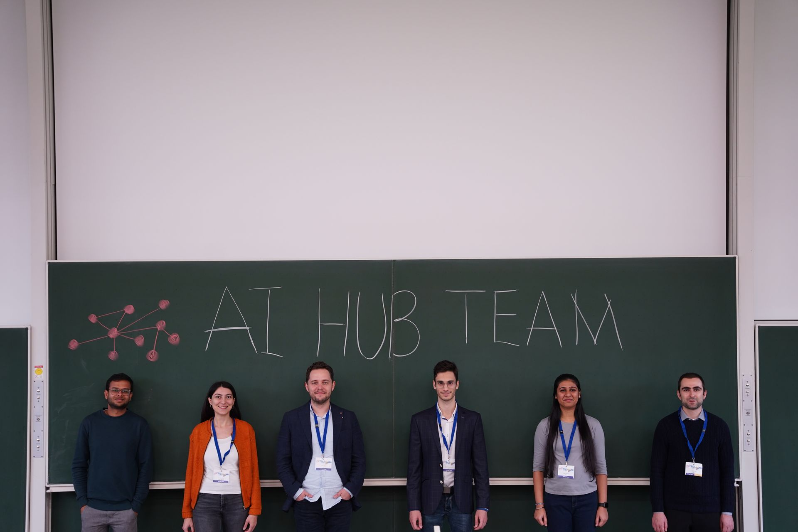
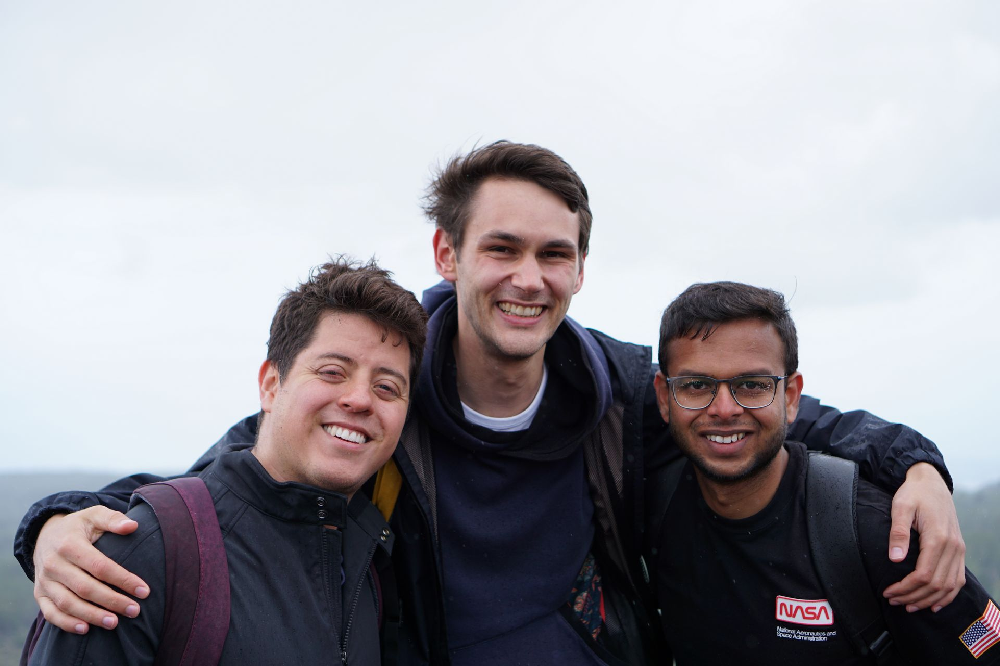

News

DDE Contest
In the last Data Driven Engineering Lecture, we have distributed 𝟱𝟱 𝗶𝗻𝗱𝗶𝘃𝗶𝗱𝘂𝗮𝗹 𝘀𝘁𝘂𝗱𝗲𝗻𝘁 𝗽𝗿𝗼𝗷𝗲𝗰𝘁𝘀 and among the submissions, we picked the 𝗧𝗼𝗽 𝟱 𝗮𝘀 𝘁𝗵𝗲 𝗳𝗶𝗻𝗮𝗹𝗶𝘀𝘁𝘀 of the DDE-(KI)2T Contest. On 𝟮𝟴𝘁𝗵 𝗼𝗳 𝗢𝗰𝘁...
Read More

Project Hermit
Growing population, expanding global economy, urbanization with rising standard of living have dangerously accelerated waste generation in the world. It is expected to reach over 3.4 billion tons of waste per year by 2050, roughly a 70% increase. One suc...
Read More

Reacting Particle-Gas Systems 2022
The 1st International Workshop on Reacting Particle-Gas Systems took place from 07 to 09 June at the Ruhr-Universität Bochum. The event is organised by the Collaborative Research Centre 287 BULK-REACTION. Dr.-Ing. Cihan Ates and Mr. Joel Arweiler particip...
Read More

Boysen Days 2022
After a two-year break from Corona, the Doctoral Students' Days were brought back to life by the Boysen Foundation. We presented our latest results from a joint project with the KIT ITCP. The project is called "Designing Gas-Liquid Contact Reactors for Ef...
Read More


AI Hub @ Karlsruhe
Dr. Cihan Ates (ITS) and Dr. Edouard Fouché (IPD) organized the first AI-oriented international networking event at KIT on 5-7 October. Three keynote speakers, 16 young researchers, and six startups shared the latest developments in their fields and their...
Read More

Spheric 2022
After a 3-year break from Corona, we were at SPHERIC 2022 in Catania, Italy, which was held for the first time again. SPHERIC is a three-day workshop dealing exclusively with the Lagrangian Smoothed Particle Hydrodynamics (SPH) method. At our institute, w...
Read More